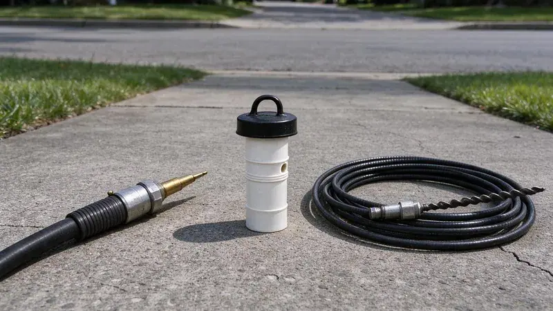
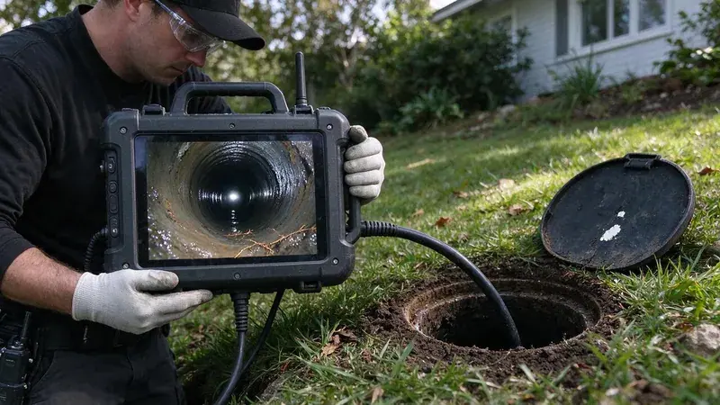

Plumbing Tips & Updates From HDF Plumbing
 15Oct, 2026
15Oct, 2026Slab Leak Warning Signs Every Florida Homeowner Should Know
Most slab leaks stay hidden for weeks. Here is what to watch for in a Florida home before the foundation pays for it.
 6Oct, 2026
6Oct, 2026How to Protect Your Pipes Before the Next Florida Freeze
Hard winters and the odd surprise freeze both split pipes. A few inexpensive steps keep Florida plumbing intact overnight.
 27Sep, 2026
27Sep, 2026Hard Water in Florida: When a Water Softener Pays for Itself
Most homeowners never add up what scale is costing them. Here is when a softener makes sense.
 18Sep, 2026
18Sep, 2026Tankless vs. Tank Water Heaters: What Works Best in Florida
Groundwater temperature, garage conditions and scale shift the tankless versus tank decision. Here is how to weigh it for a Florida home.
 9Sep, 2026
9Sep, 2026Kitchen Sink Backups: Causes, Prevention and Quick Solutions
Grease is behind most kitchen sink backups. Here is how to fix a slow sink and keep it from coming back.
 31Aug, 2026
31Aug, 2026Underground Pipe Damage: Common Causes and Modern Repair Solutions
You cannot see a buried pipe fail. Here is what damages underground lines in Florida and how modern repairs work.

22Aug, 2026Hydro Jetting vs. Snaking: Which Drain Cleaning Method Do You Need?
A snake punches a hole through a clog, and a jetter scrubs the pipe clean. Here is how to tell which job you have.

13Aug, 2026Why a Sewer Camera Inspection Belongs on Every Florida Home Inspection
The sewer lateral is one of the priciest systems in a house and the one most inspections skip. A 45 minute camera scope fills it.
Have a plumbing question we did not cover?
Our team is happy to talk it through and give you a straight answer.